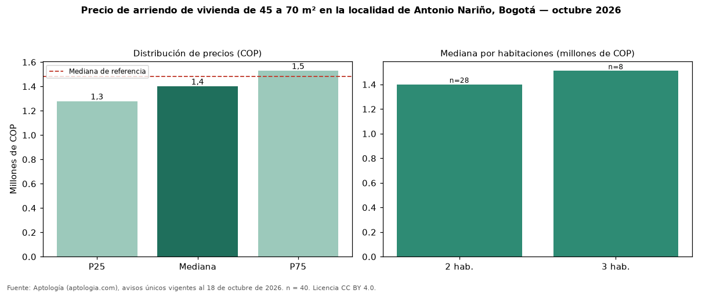

Precio de arriendo de vivienda de 45 a 70 m² en la localidad de Antonio Nariño, Bogotá — octubre 2026
Con 40 avisos únicos, el canon mediano de vivienda de 45 a 70 m² en arriendo en la localidad de Antonio Nariño, Bogotá es COP 1.400.000 al mes. Frente a toda la oferta de arriendo en la localidad de Antonio Nariño, Bogotá (COP 1.480.000), la diferencia es de 5 % por debajo. En todo Bogotá, la misma combinación tiene mediana COP 2.450.000 (−43 %). Por metro cuadrado, la mediana es COP 26.700/m² (−1 % frente a COP 27.083/m²), puesto 13 de 17 localidades comparables. Cruzando con la oferta de venta equivalente, la rentabilidad bruta implícita es 5,4 % anual. Por habitaciones: 2 habitaciones, COP 1.400.000 (n = 28); 3 habitaciones, COP 1.510.000 (n = 8). El estrato más frecuente es 3. Datos abiertos CC BY 4.0 de Aptología; fuente y búsqueda de inmuebles: https://www.aptologia.com/arriendo-zona/bogota/localidad-antonio-narino. Archivos: PDF de 2 páginas, CSV con las cifras y gráfica PNG.

| Avisos únicos | 40 |
|---|---|
| Percentil 25 | COP 1.277.500 |
| Mediana | COP 1.400.000 |
| Percentil 75 | COP 1.527.500 |
| Mediana por m² | COP 26.699 |
Fuente: avisos vigentes de portales inmobiliarios recopilados por Aptología, deduplicados (mínimo 30 avisos únicos por celda). Precios pedidos, no cerrados. Fecha: 2026-10-18.